BasicSynth Instruments
BasicSynth includes nine different synthesis instruments. Each instrument
is a collection of unit generators, the fundamental signal processing unit in a software synthesizer.
A unit generator may generate an audio signal,
a control signal, or process an input same in some manner.
An instrument patch defines the connections between unit generators.
Instruments can be pre-patched, partially-patched, or un-patched.
The connections in a pre-patched instrument are made internally by the
program and cannot be changed. Pre-patched
instruments can be quickly configured since you only need to set the parameters
to the instrument. A partially-patched instrument makes some connections
internally, but the patch can be varied somewhtat by enabling or disabling
one or more unit generators. Partially-patched instruments require more
effort to configure, but allow for a wider range of sounds.
An un-patched instrument requires you to select
the unit generators, create a patch, and then set the parameters for each unit generator.
Un-patched instruments require the most effort (and knowledge) to configure, but
allow use of a wide range of synthesis techniques.
An instrument, patch, and parameters together define an instrument configuration. Each instrument
configuration is given a name and can be referenced in the score by that name. Although there
are a limited number of instruments in BasicSynth, there can be an unlimited number
of instrument configurations.
Patch Diagrams
Each instrument is represented by a patch diagram using the symbols shown in the
following table.
| Symbol |
Meaning |
| 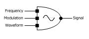 |
Oscillator. The symbol used in BasicSynth is slightly different than the
one commonly used in books on computer music. The amplitude of the
oscillator is not shown as an input because the instruments typically
control amplitude by multiplying the output by an amplitude control.
The middle input is a phase modulation input. The waveform input
is an ID value that must match a table defined in the project. |
| 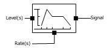 |
Envelope generator. The number of rates and levels varies
with the type of envelope. |
| 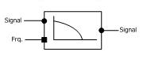 |
Filter. Bandpass filters, and filters with resonance, have an additional input to control the bandwidth. |
| 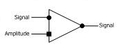 |
Amplifier (volume control). Patch diagrams also use a multiply to indicated volume level modification. |
| 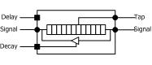 |
Delay line. |
| 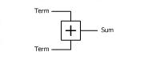 |
Addition of two signals |
| 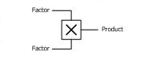 |
Multiply two signals |
| 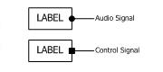 |
Generic generator or connection to another part of the diagram. |
| 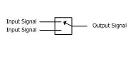 |
Selection between inputs (switch). |
| 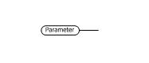 |
Input parameter value. |
Instrument Editors
Because each instrument implements a different patch, and has different parameters,
each instrument is configured with a specialized editor. However, all instrument
editors are built from a common set of display controls.
 |
Labels are used to identify input controls or groups. A label with a black background is an input
field. When you click on the input field a popup form allows you to enter a value.
|
| 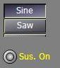 |
Switches are used to turn an option on and off. Button switches are rectangular and appear pressed-in when
selected. Lamp switches have a circular or rectangle "lamp" that changes color when selected. Switches are
used to select a wavetable, an envelope curve type, or change the range of a parameter.
|
| 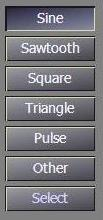 |
Oscillators typically have a wavetable select group on the form. Standard waveforms are given
separate switches and labeled with the waveform. User defined waveforms are selected by clicking
on the [Select] button and then selecting the waveform from a popup form. The [Other] button will
be selected when a waveform other than the standard list has been selected.
|
| 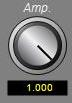 |
Knobs and sliders are used to change a value that varies over a specified range. Typical uses are
to vary the frequency of an oscillator, or set an envelope rate and level. To enter a value with a knob, hold
the mouse button down over the knob image while moving the mouse in a circular motion. The rate
of change for a knob can be varied using the control and shift keys. When the control key is held
down, the value changes at 1/10th the normal rate. When the shift key is held down, the value changes
at 10 times the normal rate. When both the control and shift keys are held down, the value
increments at 100 times the normal rate. The normal rate for a knob varies depending on the
range of the value, but typically changes the value by 0.01 for each pixel of movement on the screen.
Knobs have a label placed below or to the side of the knob that shows the current value.
You can click on the label and enter the value directly in a pop-up form.
|
| 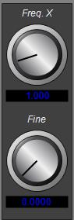 |
A frequency group is used on some instruments to set frequency using a combination of course and fine
selection. The course knob increments in integers while the fine increments over the range of [0,1] in
thousandths. The frequency multiple is the sum of the two controls.
|
| 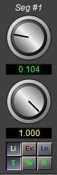 |
Some envelopes have a variable number of segments where each segment is configured with
a pair of knob controls. One knob sets the rate while the other sets the end level.
Two switch groups apply to each segment. The rate group defines the interpretation of the
rate value. When the "%" mode is selected, the rate value indicates a portion of the note
duration. When the "T" (time) mode is selected, the rate value is a fixed time in seconds.
When the "R" (remainder) mode is selected, the rate value is a portion of the remainder
of the duration minus all other segment rates. Only one segment should be configured
as a "R" segment. The curve type group changes the segment from linear (Li), exponential (Ex) or logarithmic (Ln).
|
| 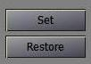 |
Forms have two common command buttons labeled Set and Restore. The Set
button takes a snapshot of the current settings. If you make changes and want to go back to a
previous configuration, the Restore button sets the instrument back to the last set of
values saved with Set.
|
Oscillators
Oscillator frequency is configured by setting the either the fundamental frequency or a frequency multiple.
The frequency multiple is a value that will be multiplied by the frequency of the note when the
instrument is started.
Almost all oscillators used in BasicSynth are wavetable oscillators. One cycle of the waveform
is stored in a table and then repeatedly scanned. During configuration you must select which wavetable
is to be used. Ten wavetables are predefined, but you may add as many wavetables as you need using
the wavetable editor.
For most instruments, oscillator amplitude is controlled by multiplying the oscillator output
with an envelope generator output.
The modular synthesis instrument, however, provides an amplitude input to the oscillators so that you
can set the amplitude to a fixed level, or set the amplitude from another unit generator.
Envelope Generators
Three different envelope generators are used in BasicSynth, AR, ADSR, and variable-segment.
An AR envelope consists of attack, optional sustain, and decay segments. The ADSR envelope consists
of attack, decay, sustain, and release segments. For some instruments, the start and end
level of an ADSR envelope can be set specifically. This is typically the case when the envelope
is applied to a modulator oscillator.
A variable-segment envelope has a variable number of segments, each defined by a rate and a level.
To configure a variable-segment envelope, you first select the number of segments you want, set the
start value, and then set the rate and level for each segment.
Envelopes can be constructed from linear, exponential or logarithmic curves. For the AR and ADSR
envelopes, the same curve applies to all segments. For a variable-segment envelope, the curve can be
set separately for each segment.
The rate value for an envelope segment is typically defined as a fixed amount of time in seconds.
However, the rate can also be configured to specify an amount of time relative to the duration
of the note. For example, if the attack rate is configured to 0.5 and note duration is one second,
the attack would last 0.5 seconds. If the note duration is shortened to one-half second, the attack
rate would be reduced to 0.25 seconds. A rate can also be specified as the remainder of the duration
after all other segments have been computed. Obviously, only one segment should be configured
as a remainder value. Note: not all instrument editors provide these variations. The simpler, pre-patched
instruments only allow a fixed rate value.
Envelope level values can cover any appropriate range. When used for amplitude control, the
range should be set to [0,1]. However, when an oscillator is used as a modulator, the range
may indicate an index of modulation and will typically vary over the range [0,20]. Likewise,
when an envelope is used to set the cutoff frequency of a filter, the range can vary from
0 to 10kHz.
Envelopes generators provide an automatic sustain feature. When sustain is enabled, the
final segment of the envelope will be delayed until a release event is recieved. When
sustain is turned off, the envelope will begin the final segment without waiting for
the release event. The ADSR envelope always has sustain on, but, since the
sustain level can be set to zero, it can function as if the sustain was turned off.
Filters
The center frequency on most filters can be set anywhere between zero and 10kHz. The editor
controls for filter frequency are set to range from 0 to 10.
A value of 1 represents 1kHz, 0.5 represents 500Hz, etc.
LFO and Pitch Bend
Several instruments include LFO and Pitch bend units. The LFO unit includes a wavetable
oscillator and a single segment envelope. The envelope provides a delayed application
of the LFO oscillator to the instrument, set by the LFO attack rate. The LFO amp
parameter is interpreted as semi-tones of variation. The actual amplitude of the
LFO unit is calculated based on the instrument frequency in order that the frequency
variation is a consistent portion of the instrument frequency.
The pitch bend operates in one of two modes. In the first mode, the unit defines
three amounts and two rates. The first amount defines the starting pitch offset,
the second amount defines the held pitch level, and the third the amount at the
end of the note. All levels are specified in semi-tones above or below the instrument
base frequency. The first rate defines the time in seconds to transition from level
one to level two, while the second rate defines the time to transition from level
two to level three. In the second mode, the unit scans a wavetable once during the
duration of the note and multiplies the wavetable values by an scale. Mode 1 is
enabled when the "on" parameter is set. Mode 2 is enabled whenever the "amp" value
is non-zero.
Instrument parameters are identified by a number, an XML tag and a short name that
is used in a Notelist map statement.